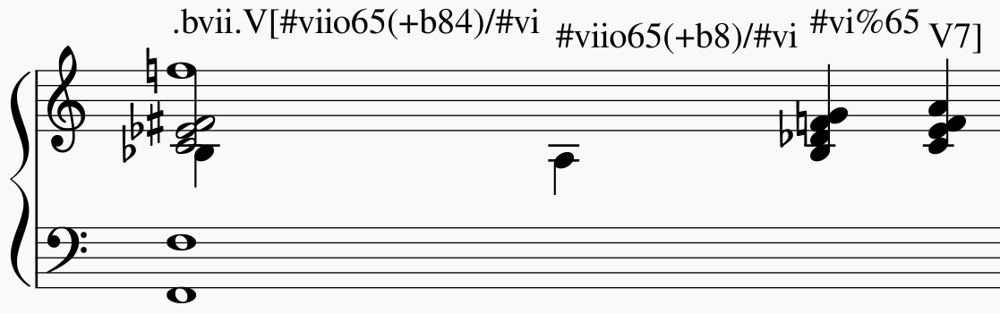

Summary¶
One of the longest possible expressions would be
.bvii.V[#viio65(+b84)/#vi. This, of course, is quite theoretical and
simply a demonstration of order and meaning of the different syntactic
components, with concrete examples given in relation to C major: *
.bvii., in the context of a major key (C major), means that all
following symbols relate to the minor key on the lowered 7th scale
degree (Bb minor). The initial dot is necessary because b is a
note name. * V[ designates the beginning of an organ point on the
5th scale degree (F). * #viio65 stands for the first inversion of
a diminished seventh chord of the raised 7th scale degree * (+b84)
designates an added diminished octave (added notes usually occur because
of pedal tones that are not in the bass) and a (not added but) suspended
fourth, withholding the third * /#vi means that this chord (the
#viio65) relates to the raised 6th scale degree. Which, in Bb
minor, would be G. Therefore, the root of ``#viio65/#vi`` would be F#.
Here, you can see an imaginary context, in C major, where this example could theoretically occur: 